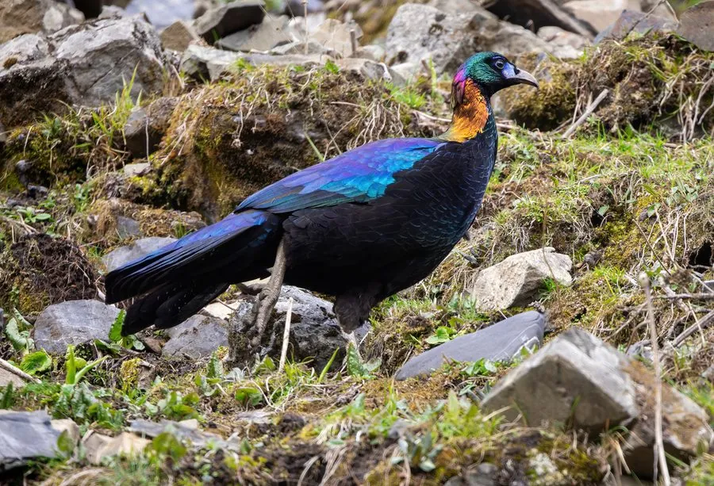

鸟类 · 动物界
绿尾虹雉 Lophophorus lhuysii

中国西南高山特有的雉类，雄鸟羽色如彩虹般闪烁金属光泽，栖于海拔三四千米的林线以上，数量稀少，被列为易危物种。
- 分类
- 门脊索动物门纲鸟纲目鸡形目科雉科属虹雉属
- 栖息环境
- 海拔 3000–4500 米的高山灌丛、杜鹃林、裸岩草甸与林线交错带
- 地理分布
- 中国四川西部、青海东南部、甘肃南部与西藏东部的高山区
- 保护级别
- IUCN 易危（VU）；中国国家一级保护动物；CITES 附录Ⅰ
物种志
绿尾虹雉是体形较大的雉类，雄鸟体长 70–80 厘米，体重 2–3 千克，雌鸟略小。雄鸟羽色极为绚丽：头顶与冠羽呈铜绿色，颈侧紫铜色，背与前胸闪着金属蓝绿光，下背与腰白色，尾羽蓝绿色，喙黄色，面部裸皮蓝色；羽毛具特殊结构，在不同角度下可由铜红变为紫蓝，像流动的彩虹。雌鸟通体棕褐，密布黑褐斑纹，伪装性很强。
它们是中国西南横断山区的特有种，栖息于海拔 3000–4500 米的高山灌丛、杜鹃林与林线以上的裸岩草甸，随季节在雪线与林线之间垂直迁移。晨昏在地面觅食，用喙掘食贝母、百合等植物的鳞茎与根，也吃嫩叶、种子和昆虫，因喜食贝母而被当地人叫作“贝母鸡”。繁殖期 4–6 月，在岩缝或灌丛下筑巢，每窝 3–5 枚卵。由于栖息地狭窄、放牧干扰与非法猎捕，其野外种群十分有限。
形态与习性
- 体长雄鸟约 70–80 cm，雌鸟约 60 cm
- 体重约 2–3 kg
- 食性贝母、百合等植物的鳞茎与根，兼食嫩叶、种子与昆虫
- 繁殖4–6 月在岩缝或灌丛下筑巢，每窝 3–5 枚卵
- 栖息海拔约 3000–4500 m，随季节垂直迁移
- 羽色特点羽枝具特殊结构，可随角度由铜红变为紫蓝
- 种群现状野外数量估计数千只，分布区狭窄且碎片化
趣味知识
- 绿尾虹雉的羽毛会随观察角度变色，从铜红到紫蓝像流动的彩虹。
- 它爱掘食贝母的鳞茎，当地山民因此叫它“贝母鸡”。
- 冬天高山被雪覆盖时，它会下移到林线附近的灌丛中觅食。